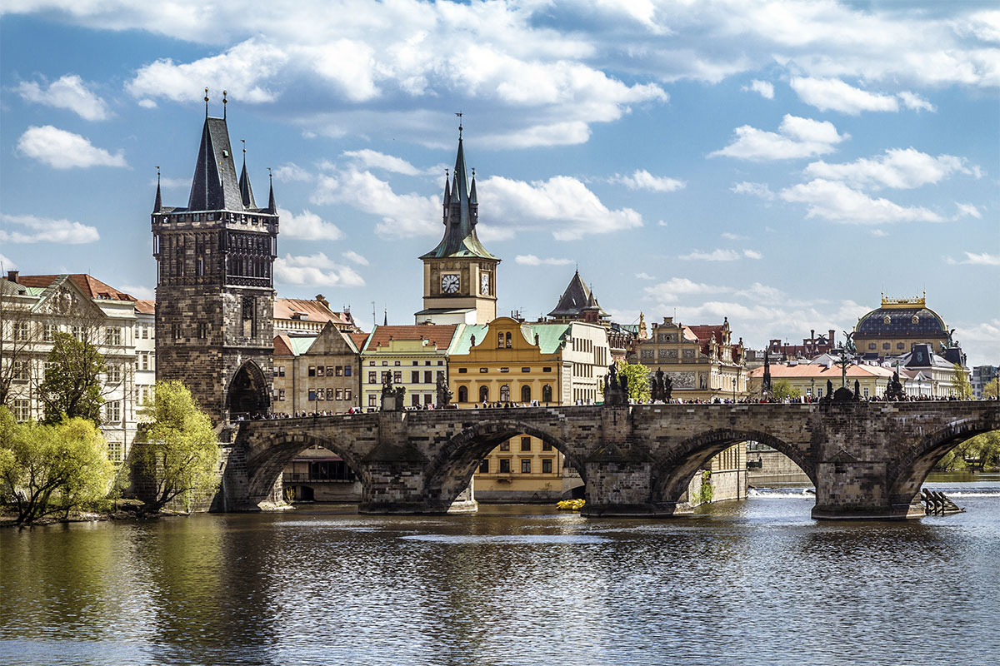
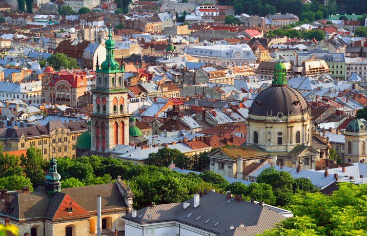
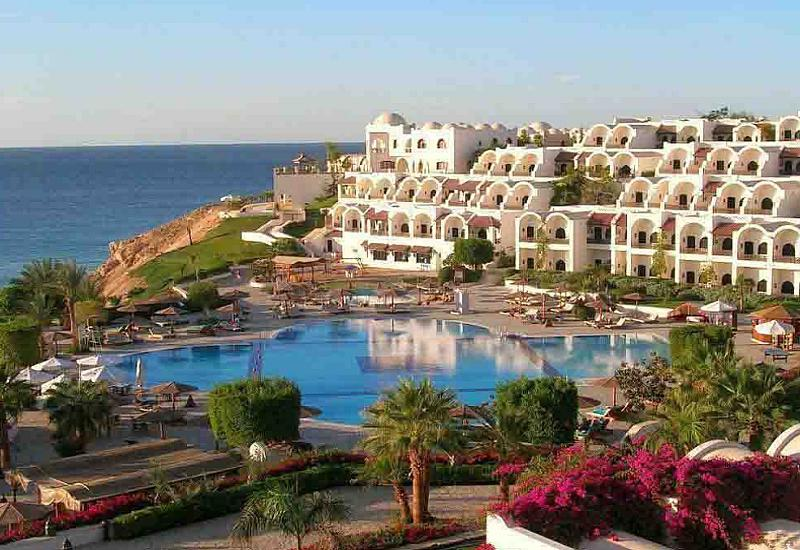

Прага
Прага – столица Чехии, крупнейший город этой страны, один из самых красивых и романтичных городов Европы. Сегодня здесь проживает
чуть более 1,2 миллионов человек, территория города составляет около 500 кв. км. Город расположился
на берегах реки Влтава, заняв территорию девяти больших холмов. Столица Чехии внесена в Список всемирного
культурного наследия ЮНЕСКО за обилие достопримечательностей самых разных направлений – здесь можно
встретить все от готической архитектуры до барокко и ренессанса, от классицизма до современного модерна.
Львов
Львов был основан в середине ХIII века галицко-волынским князем Данилом Романовичем и назван в честь своего сына Льва. Впервые
Львов упоминается в 1256г.В годы правления Юрия Львовича, в начале ХIV века город был столицей Галицко-Волынского
княжества.Старый Львов состоял из трех частей: укреплённого замка, окольного города и пригорода.
Архитектура города Львова разнообразна и неповторима. В городе, который возник на Западных рубежах
Киевской Руси, очень ярко вырисовывается взаимовлияние разных культур и традиций.


Шарм-эш-Шейх
Шарм-эш-Шейх — город-курорт в Египте на южной оконечности Синайского полуострова на побережье Красного моря Египетской ривьеры.
Один из районных центров губернаторства Южный Синай. Шарм-эль-Шейх - это курорт на побережье, который
славится своими богатыми коралловыми рифами, морем и комфортабельными отелями на любой вкус. Безусловно,
самое большое богатство Шарм-эль-Шейха - это море, ради которого туда каждый год приезжает большое
количество туристов из разных уголков мира. Шарм-эль-Шейх можно условно разделить на 5 районов, расположенных
вдоль протяженного побережья:Шарм-эль-Майя, Хадаба, Хай-эн-Нур, Наама-Бей, Набк-Бей.